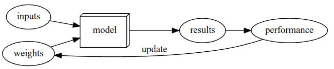

What is Deep Learning?
Deep learning is a computer technique to extract anf transform data for that it uses multiple layers of neural networks. The layers are trained by alogrithms that minimze thier accuracy. In this way, the network learn to perform a specified task.
Do you need these for Deep Learning?
Lots of Math (True/False)
Lots of Data (True/False)
Lots of expensive computers (True/False)
A Phd (True/False)
Lots of Math (False)
Lots of Data (False)
Lots of expensive computers (False)
A Phd (False)
Name five areas where deep learning is now the best tool in the world?
- Medicine
- Cancer detection
- Security
- Spam detection
- Computer vision
- Classification of Images
- Playing Games
- Chess, Go
- Natural language processing (NLP)
- summerizing documents, classifying documents
What was the name of the first device that was based on the principle of the artificial neuron?
Mark 1-Perceptron.
Frank Rosenblatt further developed the artificial neuron to give it the ability to learn. Based on this he worked on building the first device that actually used these principles, the Mark ! Perceptron.
Based on the book of the same name, what are the requirements for parallel distrubted processing?
Based on the definition parallel distributed processing the requirements are: 1. A set of processing units 2. A stat of activation 3. An output function for each unit 4. A pattern of connectivity among units 5. A propagation rule for propagating pattern of activities through th network of conductivities. 6. An activation rule for combining the inputs impinging on a unit with the current state of that unit to produce an output for the unit. 7. A learning rule whereby patterns of connectivity are modified by experience. 8. An environment within which the system must operate.
What were the tow theoretical misunderstandings that held back the field of neural networks?
In 1969, Marvin Minsky an Seymour Papert demonstrated in their book, “Perceptrons”, that a single layer of artificial neurons cannot learn simple, critical mathematical functions like XOR logic gate. While they subsequently demonstrated in the same book that additional layers can solve this problem, only the first insight was recognizes, leading to the start of the first AI winter.
In the 1980’s models with tow layers were being explored. Theoretically, it is possible to approximate any mathematical function using two layers of artificial neurons. However, in practices, these networks were too big and too slow. While it was demonstrated that adding additional layers improved performance, this insight was not acknowledged, and the second AI winter began. In this past decade, with increased data availability, and improvements in computer hardware (both in CPU performance but more importantly in GPU performance), neural networks are finally living up to its potential.
What is a GPU?
A GPU is a Graphics Processing Unit. They were specializes processing units designed to accelerate graphics redndering for gaming. Thanks to their unique capability to efficiently parallelize massive distributed computational processes, GPUs have successfully been applied to applications beyond their original remit. These optimizations and capability’s allow us to run and train neural networks hundreds of times faster than a regular CPU.
Open a notebook and execute a cell containing: 1+1. What happens?
In Jupyter Notebook we can create code cells in an interactive manner. When we execute a cell containing some code, the code runs by Python and the output is displayed under the curren code cell.
Code Cell: 1+1 Output under der Code Cell: 2
Follow through each cell of the stripped version of the notebook for this chapter. Before executing each cell, guess what will happen.
ToDo
Complete the Jupyter Notebook online appendix (https://oreil.ly9uPZe).
ToDo
Why is it hard to use traditional computer program to recognize images in a photo?
When creating a normal computer program think about some steps and translate them into code. As Example we can write an algorithm to sort a list. But for recognizing an image or object it is tricky. We as human subconsciously learned a lot of features defining one object from an other. It is very difficult to manually code these complex patterns of shapes, textures, colors, and other features to recognize different objects and images.
What did Samuel mean by “weight assignment”?
“weight assignment” refers to the current values of the model parameters. Arthur Samuel further mentions an “ automatic means of testing the effectiveness of any current weight assignment ” and a “ mechanism for altering the weight assignment so as to maximize the performance ”. This refers to the evaluation and training of the model in order to obtain a set of parameter values that maximizes model performance.
What term do we normally use in deep learning for what Samuel called “weights”?
Weights are also called parameters.
Draw a picture that summarizes Samuel`s view of a machine learning model.

Why is it hard to understand why a deep learning model makes a particular prediction?
All kinds of machine learning models (including deep learning and traditional statical models) can be challenging to fully understand. Think of a linear regression model. Simply, we have some input variables/data that are multiplied by some weights, giving us an output. We can understand which variables are more important and which are less important based on their weights. A similar logic might apply for a small neural network with 1-3 layers. However, deep neural networks have hundreds, if not thousands, of layers. It is hard to determine which factors are important in determining the final output. The neurons in the network interact with each other, with the outputs of some neurons feeding into other neurons. Altogether, due to the complex nature of deep learning models, it is very difficult to understand why a neural network makes a given prediction.
However, in some cases, recent research has made it easier to better understand a neural network’s prediction. For example, as shown in this chapter, we can analyze the sets of weights and determine what kind of features activate the neurons. When applying CNNs to images, we can also see which parts of the images highly activate the model. We will see how we can make our models interpretable later in the book.
What is the name of the theorem that shows that a neural network can solve any mathematical problem to any level of accuracy?
If you regard a neural network as a mathematical function, it turns out to be a function which is extremely flexible depending on its weights. A mathematical proof called the universal approximation theorem shows that this function can solve any problem to any level of accuracy, in theory.
What do you need in order to train a model?
You need a architecture, a general template for how that kind of model works internally. For training/fitting the model you need data to specialize the general architecture. To define how well a model does on a single prediction. We need to define a loss function, which determines how good the model performs. Do determine the loss we need labeled data, data indicating what it represent.
How could a feedback loop impact the rollout of a predictive policing model?
In a predictive policing model, we might end up with a positive feedback loop, leading to a highly biased model with little predictive power. For example, we may want a model that would predict crimes, but we use information on arrests as a proxy . However, this data itself is slightly biased due to the biases in existing policing processes. Training with this data leads to a biased model. Law enforcement might use the model to determine where to focus police activity, increasing arrests in those areas. These additional arrests would be used in training future iterations of models, leading to an even more biased model. This cycle continues as a positive feedback loop.
Do we always have to use 224x224-pixel images with the cat recogintion?
No, This is the standard size for historical reasons (old pretrained models require this size exactly), but you can pass pretty much anything. If you increase the size, you’ll often get a model with better results (since it will be able to focus on more details), but at the price of speed and memory consumption; the opposite is true if you decrease the size.
What is the difference between classification and regression?
- Classification A classification model is one that attempts to predict a class, or category. That is, it’s predicting from a number of discrete possibilities.
- Regression A regression model is one that attempts to predict one or more numeric quantities, such as a temperature or a location.
What is a validation set? What is a test set? Why do we need them?
- Training set The data used for fitting the model, does not include any data from the validation set. (If there is enough data 80% is used for training)
- Validation set A set of data held out from training, used only for measuring how good the model is. (If there is enough data 20% is used for validation)
- Test set As we hold the validation data back from the training process, we can hold back a test set data even from ourselves. It cannot be used to improve the model, it can only be used to evaluate the model at the very end. (Take out some data for testing and split the rest to 80% for training and 20% for validation)
What will fastai do if you don’t provide a validation set?
It will automatically create a validation dataset if no validation set is provided. By default fastai takes out 20% that is held out is randomly.
Can we always use a random sample for a validation set? Why or why not?
A good validation or test set should be representative of new data you will see in the future. Sometimes this isn’t true if a random sample is used. For example, for times series data, selecting sets randomly does not make sense. Instead, defining different time periods for the train, validation, and test set is a better approach.
What is overfitting? Provide an example.
Overfitting is the single most important and challenging issue when training for all machine learning. Training a model in such a way that it remembers specific features of the input data, rather than generalizing well to data not seen during training.
What is a metic? How does it differ from loss?
The concept of a metric may remind you of loss, but there is an important distinction. The entire purpose of loss is to define a “measure of performance” that the training system can use to update weights automatically. In other words, a good choice for loss is a choice that is easy for stochastic gradient descent to use. But a metric is defined for human consumption, so a good metric is one that is easy for you to understand, and that hews as closely as possible to what you want the model to do. At times, you might decide that the loss function is a suitable metric, but that is not necessarily the case.
How can pretrained models help?
A model that has weights that have already been trained on some other dataset is called a pretrained model. You should nearly always use a pretrained model, because it means that your model, before you’ve even shown it any of your data, is already very capable. For instance, parts of pretrained models will handle edge, gradient, and color detection, which are needed for many tasks. Using pretrained models is the most important method we have to allow us to train more accurate models, more quickly, with less data, and less time and money.
What is the “head” of a model?
The head of a model is the part that is newly added to be specific to the new dataset. So the other layers which were not replaced where already trained for what the model war originally thought for.
What kinds of features do the early layers of a CNN find? How about the later layers?
The early layers learn simple features corners, edges, lines, circles. The later layers learn more advanced features like eyes, wheels, outlines of animals trees or humans.
Are image models useful only for photos?
Nope! Image models can be useful for other types of images like sketches, medical data, etc.
However, a lot of information can be represented as images . For example, a sound can be converted into a spectrogram, which is a visual interpretation of the audio. Time series (ex: financial data) can be converted to image by plotting on a graph. Even better, there are various transformations that generate images from time series, and have achieved good results for time series classification. There are many other examples, and by being creative, it may be possible to formulate your problem as an image classification problem, and use pretrained image models to obtain state-of-the-art results!
What is an architecture?
The architecture is the template or structure of the model we are trying to fit. It defines the mathematical model we are trying to fit.
What is segmantaion?
Creating a model that can recognize the content of every individual pixel in an image is called segmentation. The result is a segmentation (mask) for which parts of the image correspond to the given label.
What is y_range used for? When do we need is?
y_range is being used to limit the values predicted when our problem is focused on predicting a numeric value in a given range (ex: predicting movie ratings, range of 0.5-5).
What are “hyperparameters”?
Training models requires various other parameters that define how the model is trained. For example, we need to define how long we train for, or what the learning rate is used (how fast the model parameters are changed). These sorts of parameters are hyperparameters.
What’s the best way to avoid failures when using AI in an organization?
- Make sure a training, validation, adn testing set is defined properly in order to evaluate the model in an appropriate manner.
- Try out a simple baseline, which future models should hopefully beat. Or even this simple baseline may be enough in some cases.